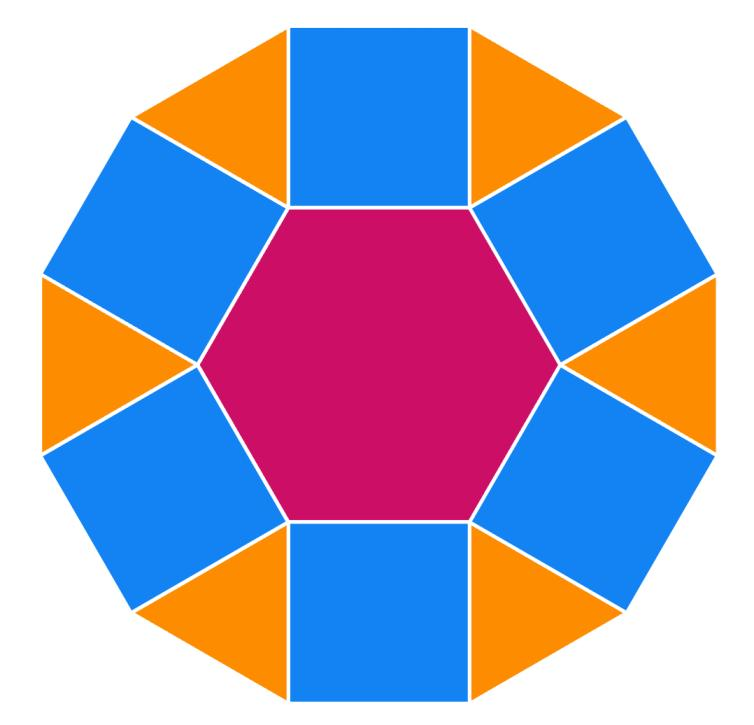

Construimos un triángulo, hexágono y dodecágono combinando pattern blocks buscando diferentes simetrías

Cubre las figuras del pdf utilizando bloques geométricos (pattern blocks). Puedes utilizar tantos bloques como necesites y de cualquier tipo.
Cada vez que encuentres una solución, dibuja la figura resultante en la plantilla correspondiente e indica sus propiedades de simetría:
Simetría rotacional: ¿la figura coincide consigo misma al girarla? Si es así, indica su orden de simetría (cuántas veces coincide consigo misma durante una vuelta completa).
Simetría axial: ¿la figura tiene algún eje de simetría, es decir, una línea que la divide en dos mitades que son imágenes especulares?
A medida que encuentres soluciones, marca las casillas correspondientes de la tabla.
Si consigues formar una figura sin ningún tipo de simetría, marca la casilla de simetría rotacional de orden 1 (1-fold).
Si no existe ninguna solución para una combinación determinada, escribe una X en la casilla correspondiente.
Cómo rellenar la tabla:
Las filas indican el orden de simetría rotacional de la figura, desde 1 hasta 12.
Las columnas distinguen entre tres tipos de figura (triángulo, hexágono y dodecágono) y, para cada uno, indican si tiene simetría axial o no:
No mirror: sin simetría axial.
Line sym.: con simetría axial.
Por ejemplo, si construyes un hexágono con simetría rotacional de orden 3 y con algún eje de simetría, marca la casilla de la fila 3-fold y la columna Hexagon – Line sym.
1. ¿Qué tipos de simetría son imposibles en cada uno de los polígonos? ¿Por qué?
2. ¿Qué relación existe entre el número de lados de un polígono regular y los posibles órdenes de simetría rotacional (n-fold) que se pueden conseguir al cubrirlo con bloques geométricos? Explica tu respuesta.
3. Describe algunas estrategias para crear nuevos diseños a partir de otros que ya hayas construido.
4. Elige una figura hecha con bloques geométricos que tenga un determinado tipo de simetría. Experimenta para conseguir que tenga más o menos simetría, cambiando unos bloques por otros o añadiendo y quitando bloques. Anota las estrategias que utilices en una hoja aparte.
5. ¿Qué tipos de simetría crees que serían posibles si intentaras cubrir una figura con la forma del bloque geométrico azul, pero con lados de 3 pulgadas (7,62 cm)? Explica tu predicción.
Inicio